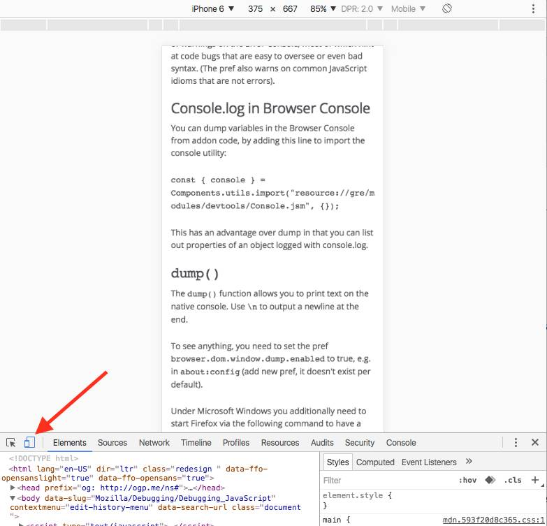
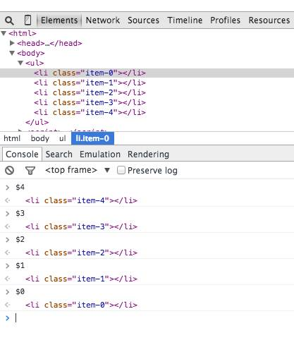
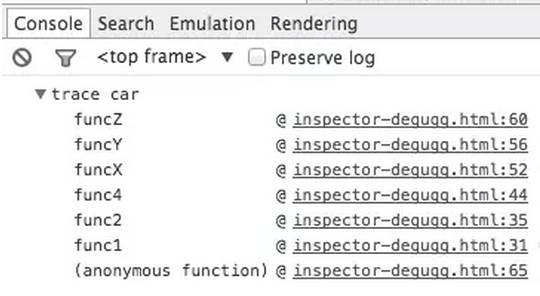
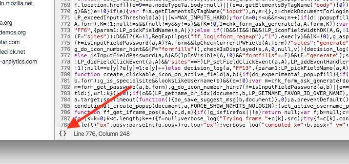
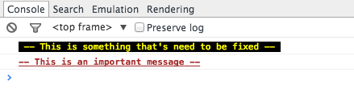
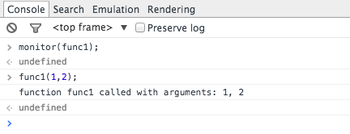
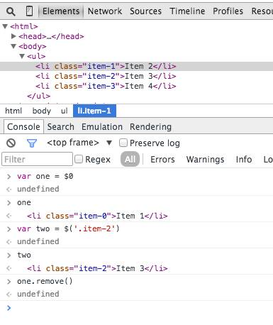
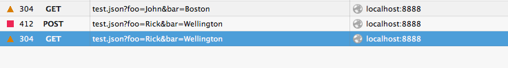
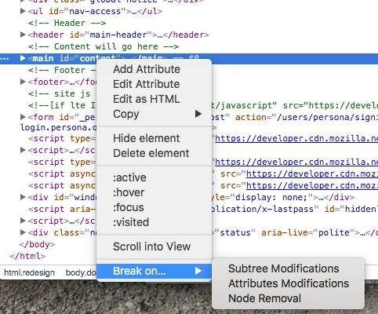

除了console.log，debugger就是另一个我很喜欢的快速调试的工具，将debugger加入代码之后，Chrome会自动在插入它的地方停止，很像C或者Java里面打断点。你也可以在一些条件控制中插入该调试语句，譬如：
if (thisThing) {
debugger;
}有时候我们需要看一些复杂的对象的详细信息，最简单的方法就是用console.log然后展示成一个列表状，上下滚动进行浏览。不过似乎用console.table展示成列表会更好呦，大概是介个样子：
var animals = [
{ animal: 'Horse', name: 'Henry', age: 43 },
{ animal: 'Dog', name: 'Fred', age: 13 },
{ animal: 'Cat', name: 'Frodo', age: 18 }
];
console.table(animals);
Chrome有一个非常诱人的功能就是能够模拟不同设备的尺寸，在Chrome的Inspector中点击toggle device mode按钮，然后就可以在不同的设备屏幕尺寸下进行调试咯：

在Elements选择面板中选择某个DOM元素然后在Console中使用该元素也是非常常见的一个操作，Chrome Inspector会缓存最后5个DOM元素在它的历史记录中，你可以用类似于Shell中的$0等方式来快速关联到元素。譬如下图的列表中有‘item-4′, ‘item-3’, ‘item-2’, ‘item-1’,‘item-0’这几个元素，你可以这么使用：

JavaScript框架极大方便了我们的开发，但是也会带来大量的预定义的函数，譬如创建View的、绑定事件的等等，这样我们就不容易追踪我们自定义函数的调用过程了。虽然JavaScript不是一个非常严谨的语言，有时候很难搞清楚到底发生了啥，特别是当你需要审阅其他人的代码的时候。这时候console.trace就要起作用咯，它可以帮你进行函数调用的追踪。譬如下面的代码中我们要追踪出car对象中对于funcZ的调用过程：
var car;
var func1 = function() {
func2();
}
var func2 = function() {
func4();
}
var func3 = function() {
}
var func4 = function() {
car = new Car();
car.funcX();
}
var Car = function() {
this.brand = ‘volvo’;
this.color = ‘red’;
this.funcX = function() {
this.funcY();
}
this.funcY = function() {
this.funcZ();
}
this.funcZ = function() {
console.trace(‘trace car’)
}
}
func1();
这边就可以清晰地看出func1调用了func2，然后调用了func4，func4创建了Car的实例然后调用了car.funcX。
有时候在生产环境下我们发现了一些莫名奇妙的问题，然后忘了把sourcemaps放到这台服务器上，或者在看别人家的网站的源代码的时候，结果就看到了一坨不知道讲什么的代码，就像下图。Chrome为我们提供了一个很人性化的反压缩工具来增强代码的可读性，大概这么用：

当我们想在函数里加个断点的时候，一般会选择这么做：
在Inspector中找到指定行，然后添加一个断点
在脚本中添加一个debugger调用
不过这两种方法都存在一个小问题就是都要到对应的脚本文件中然后再找到对应的行，这样会比较麻烦。这边介绍一个相对快捷点的方法，就是在console中使用debug(funcName)然后脚本会在指定到对应函数的地方自动停止。这种方法有个缺陷就是无法在私有函数或者匿名函数处停止，所以还是要因时而异：
var func1 = function() {
func2();
};
var Car = function() {
this.funcX = function() {
this.funcY();
}
this.funcY = function() {
this.funcZ();
}
}
var car = new Car();
当我们开发现代网页的时候都会用一些第三方的框架或者库，它们几乎都是经过测试并且相对而言Bug较少的。不过当我们调试我们自己的脚本的时候也会一不小心跳到这些文件中，引发额外的调试任务。解决方案呢就是禁止这部分不需要调试的脚本运行，详情可见这篇文章：: javascript-debugging-with-black-box。
在一些复杂的调试环境下我们可能要输出很多行的内容，这时候我们习惯性的会用console.log, console.debug, console.warn, console.info, console.error这些来进行区分，然后就可以在Inspector中进行过滤。不过有时候我们还是希望能够自定义显示样式，你可以用CSS来定义个性化的信息样式：
console.todo = function(msg) {
console.log(‘ % c % s % s % s‘, ‘color: yellow; background - color: black;’, ‘–‘, msg, ‘–‘);
}
console.important = function(msg) {
console.log(‘ % c % s % s % s’, ‘color: brown; font - weight: bold; text - decoration: underline;’, ‘–‘, msg, ‘–‘);
}
console.todo(“This is something that’ s need to be fixed”);
console.important(‘This is an important message’);
在console.log()中你可以使用%s来代表一个字符串 , %i来代表数字， 以及 %c来代表自定义的样式。
在Chrome中可以监测指定函数的调用情况以及参数：
var func1 = function(x, y, z) {
};
这种方式能够让你实时监控到底啥参数被传入到了指定函数中。
在Console中也可以使用来进行类似于querySelector那样基于CSS选择器的查询，(‘css-selector’) 会返回满足匹配的第一个元素，而$$(‘css-selector’)会返回全部匹配元素。注意，如果你会多次使用到元素，那么别忘了将它们存入变量中。

很多人习惯用Postman进行API调试或者发起Ajax请求，不过别忘了你浏览器自带的也能做这个，并且你也不需要担心啥认证啊这些，因为Cookie都是自带帮你传送的，这些只要在network这个tab里就能进行，大概这样子：

DOM有时候还是很操蛋的，有时候压根不知道啥时候就变了，不过Chrome提供了一个小的功能就是当DOM发生变化的时候它会提醒你，你可以监测属性变化等等：

原文：https://raygun.com/blog/2016/05/debug-javascript/#comments
译文：https://segmentfault.com/a/1190000005624728
译者：王下邀月熊_Chevalier

![]()